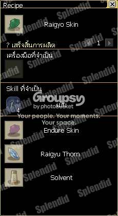

Steel Hammer ที่ไม่ได้ซื้อจากร้านเครื่องประดับหาจากไหน
westlykung เขียน:Steel Hammer ที่ไม่ได้ซื้อจากร้านเครื่องประดับหาจากไหน
อันไหนล่ะท่าน อันที่ใช้ทำอาวุธเหรอ ตามนี้ ไม่ก็หาจากกล่อง เช่น ที่ดันหมี
 ภาพจากท่าน Porphyryl
ภาพจากท่าน Porphyryl
http://eco.froztic.in.th/archive/ecofanclub/
http://eco.froztic.in.th/archive/ecofanclub/viewtopic.php?f=27&t=54621
porpulation เขียน:raigou skin หาได้จากไหนคับ


porpulation เขียน:ขออีกชิ้นนึงคับ
pelf belt ดรอปจากตัวอะไรคับ
มีอยู่ในคลังอันนึง ไม่รู้ได้มายังไง
หาจากโกเล็มทูกทิศละ ไม่เห็นซักอัน กะจะไปดรอปเอง
อีกคำถาม
ถ้าผมไปสิงแล้วใช้ใบคูณ EXP แล้วก็ล๊อกเอ๊า ค่าประสบการณ์เป็นไงคับ

Tamie เขียน:สกิล Goad ของ Breeder
มันช่วยเร่งค่า Critical
ของ Pet รึเปล่าครับ